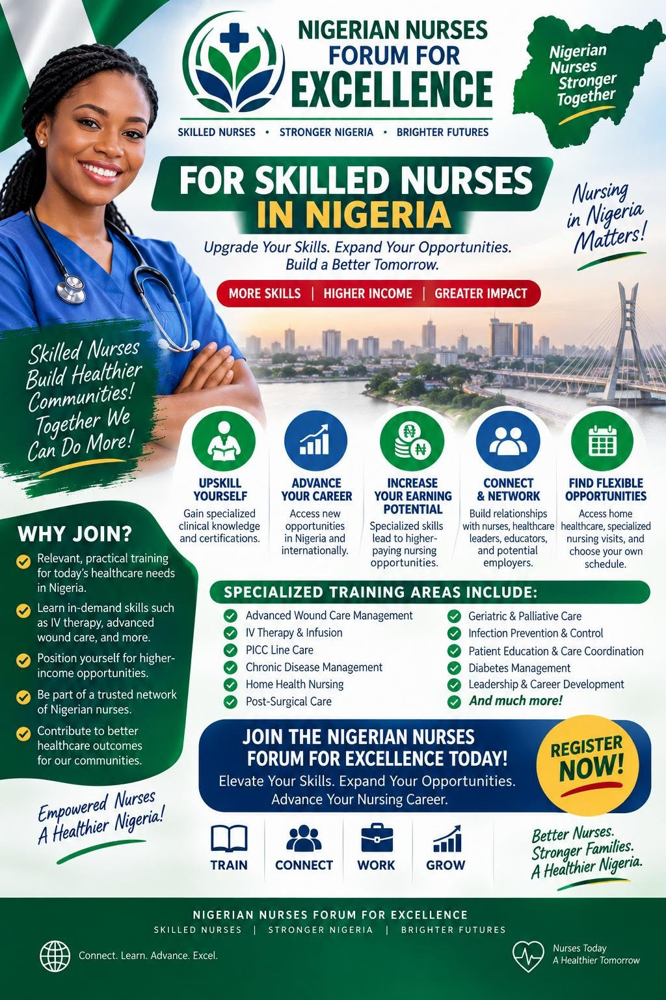

01
Upgrade Your Skills
Gain specialized clinical knowledge and learn practical skills that can strengthen your professional profile.
The Nigerian Nurses Forum for Excellence is a professional platform created to connect, empower and advance Nigerian nurses who want to grow beyond the opportunities they know today.

Nursing opportunities are expanding beyond traditional bedside roles. The Forum helps members discover and prepare for professional pathways through practical learning, networking, mentorship, specialized clinical development and exposure to flexible healthcare opportunities.
The goal is simple: help Nigerian nurses become more skilled, more connected and better positioned to create greater value for patients, employers and communities.
Membership is designed around the practical things that can move a nursing career forward.
Gain specialized clinical knowledge and learn practical skills that can strengthen your professional profile.
Discover new career pathways and opportunities in Nigeria and internationally.
Specialized skills can help position qualified nurses for higher-value roles and additional professional opportunities.
Build relationships with nurses, healthcare leaders, educators, mentors and potential employers.
Explore home healthcare, specialized nursing visits, training opportunities and flexible work arrangements.
Learn alongside professionals who are committed to stronger nursing practice and healthier communities.
The Forum will expose members to specialized clinical and career-development areas that can strengthen competence, confidence and professional relevance.
Join to Receive Updates →Enter the professional community through the official WhatsApp group.
Receive updates about learning, professional development and relevant opportunities.
Participate in specialized training and career-development activities as they become available.
Connect with professionals who can broaden your perspective and professional reach.
Join the Nigerian Nurses Forum for Excellence and become part of a community focused on stronger nurses and a healthier Nigeria.